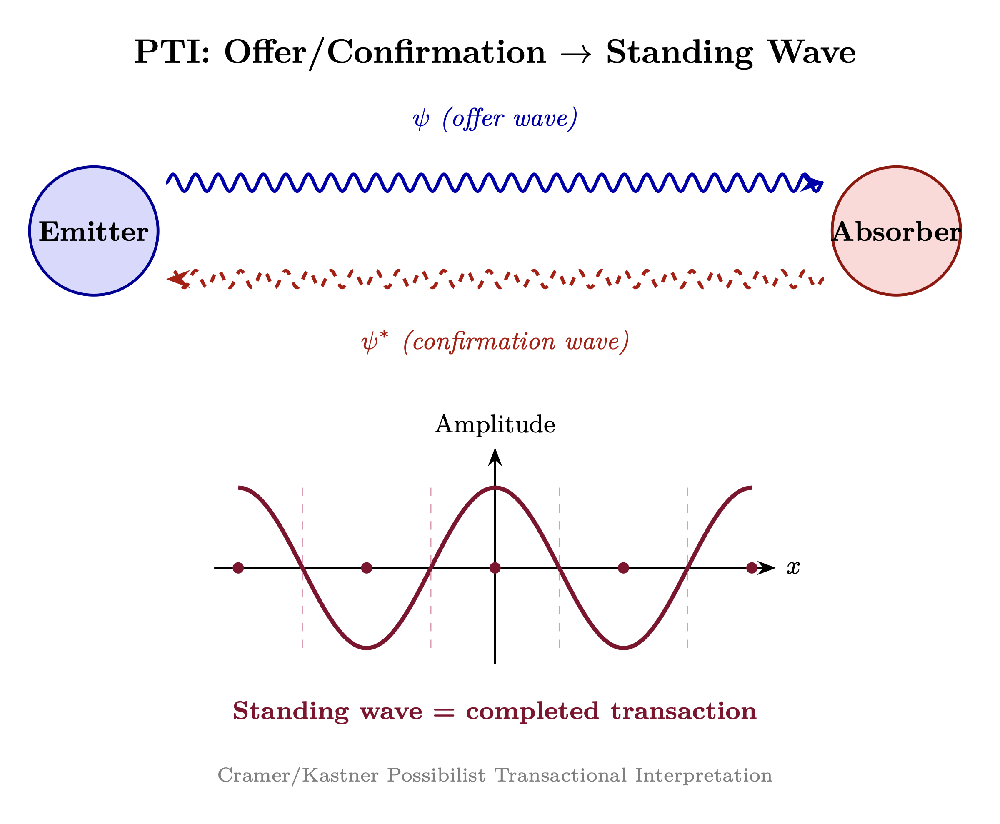
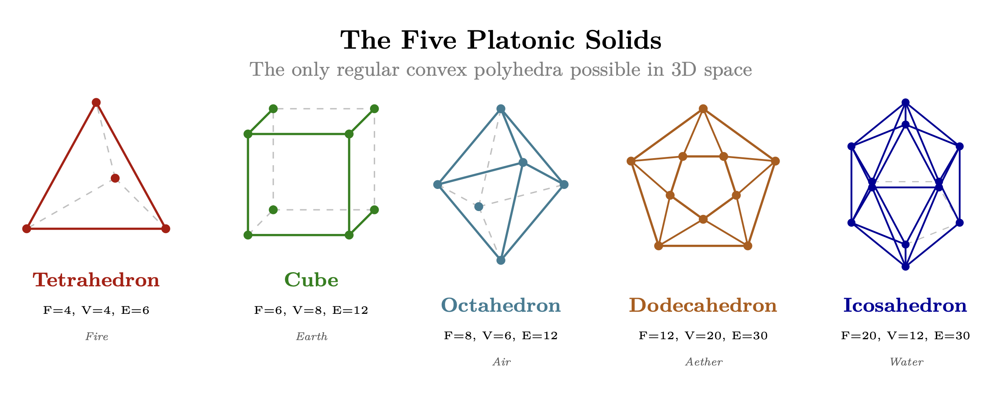
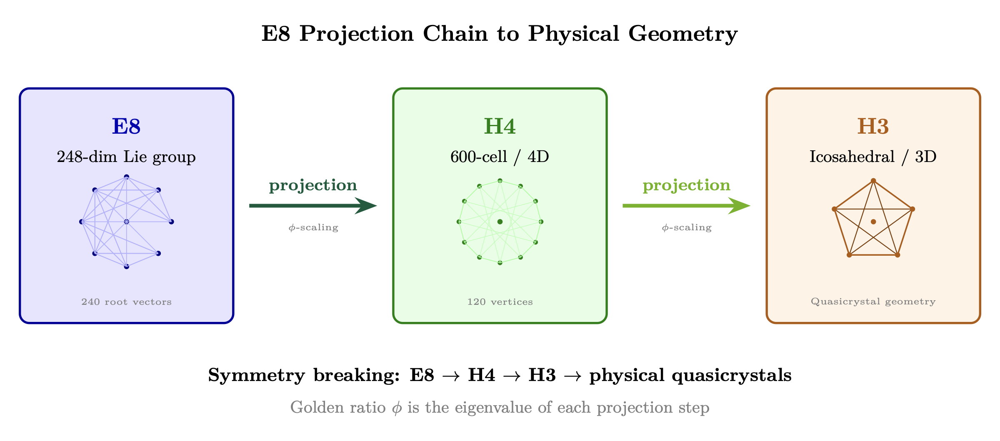
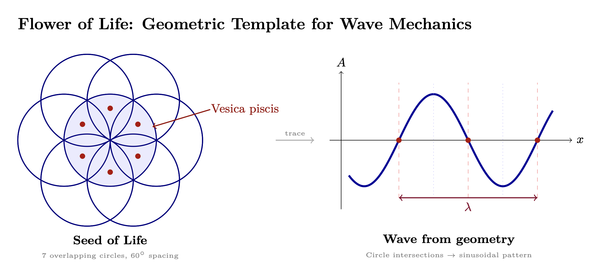

Chapter 3: Demodulation Into Structure
Standing Waves, Templates, and Creative Feedback
KEY FINDINGS — Chapter 3: Demodulation Into Structure
Evidence-tier key: [L1] established/replicated evidence; [L2] grounded extension with moderate uncertainty; [L3] speculative hypothesis; [L4] conceptual/anecdotal.
- Platonic solids appear as organizing templates across 40+ orders of magnitude, from nuclear magic numbers to cosmic topology — the only regular convex polyhedra possible in 3D [L1-HIGH]
- The Possibilist Transactional Interpretation (PTI) provides a physics mechanism for how quantum possibilities become actualized reality through offer/confirmation wave transactions [L2-MEDIUM]
- Microtubule geometry (VFD framework) implements phi-scaled resonant modes spanning 15 orders of magnitude, with 7 testable predictions [L2-MEDIUM]
- Morphic resonance evidence (crystallization ease, rat learning, convergent evolution) is suggestive but not conclusive; controlled replication remains a priority [L3-SPECULATIVE]
- Sacred site acoustic resonance at 110-120 Hz appears cross-culturally with precision suggesting design intent [L2-MEDIUM]
_________________________________
1. RF Analogy Overview
1.1 The Core Concept
Demodulation extracts information content from a carrier wave. In radio, an AM signal contains carrier + sidebands; demodulation strips the carrier to reveal the audio.
Structure at all scales arises from demodulating Source’s infinite-bandwidth broadcast. The density cascade (Ch 2) describes the impedance tiers; this chapter explains HOW the infinite Source broadcast becomes perceivable structure through:
- 1.
- Standing waves in resonant cavities
- 2.
- Templates/forms existing in the torsion field
- 3.
- Boundaries projecting templates into manifestation
- 4.
- Subagents receiving AND rebroadcasting (bidirectional creativity)
- 5.
- Coherent integration across lifetimes creating new templates
1.2 Philosophical Foundations for Templates
1.2.1 Platonic Forms Plato’s Theory of Forms (c. 380 BCE) provides the original template concept:
- Eternal, perfect forms exist in a higher realm (the “realm of Forms”)
- Physical objects are imperfect instantiations of these perfect forms
- The form of “Chair” is more real than any particular chair
- Knowledge is recollection—remembering what the soul knew before embodiment
RF mapping: Platonic Forms = morphic templates stored as torsion field patterns. Physical instantiation = demodulation/reception of these templates. The imperfection of physical objects = noise and distortion in the receiver, not deficiency in the template.
1.2.2 Goethe’s Morphology Johann Wolfgang von Goethe (1749-1832) developed Morphology through empirical observation:
- Urpflanze (archetypal plant): A template from which all plant forms derive
- Metamorphosis: All plant organs are transformations of one archetypal form (the leaf)
- Nature works from templates, producing variations on fundamental themes
- Observation led to inference of underlying templates—not philosophical speculation but empirical pattern recognition
Key insight: Goethe arrived at templates through OBSERVATION, not metaphysics. The patterns demanded explanation; templates emerged as the best hypothesis.
RF mapping: The Urpflanze = morphic template for plant-form. Variations (oak, maple, grass) = different demodulation parameters applied to the same template class.
1.2.3 Whitehead’s Process Philosophy Alfred North Whitehead (1861-1947) developed a metaphysics compatible with this model:
- “Eternal objects”: Patterns/forms that are real but non-material
- “Actual occasions”: Momentary events where eternal objects “ingress” into physical reality
- “Prehension”: How each actual occasion grasps/receives from the past and from eternal objects
- “Creativity”: The ultimate principle—universe continuously creates novelty
Key insight: Whitehead provides a metaphysical framework for information-first causation. Forms are real but non-material; they ingress into physical events. This is precisely the RF model: templates exist in the torsion field; physical systems receive and instantiate them. \[ \text {Eternal Object (Template)} \xrightarrow {\text {Ingression}} \text {Actual Occasion (Physical Event)} \] ### 1.3 The Possibilist Transactional Interpretation
This section introduces the Possibilist Transactional Interpretation (PTI) of quantum mechanics as the mechanism by which Source’s infinite potential becomes actualized physical reality. PTI provides the “how” for the demodulation process—explaining not just that templates become structure, but the specific physics of actualization.
1.3.1 The UV Fixed Point as Zero Ontology Asymptotic Safety in Quantum Gravity
At the Planck scale, quantum gravity theories predict a UV (ultraviolet) fixed point where spacetime itself becomes fundamentally different. The Asymptotic Safety program (Reuter & Saueressig, 2012), supported by 83 analyzed papers, calculates specific values for this fixed point: \[ g^* = 0.71 \pm 0.02, \quad \lambda ^* = 0.21 \pm 0.02 \] Where:
| Variable | Description |
| \(g^*\) | dimensionless gravitational coupling at the fixed point |
| \(\lambda ^*\) | dimensionless cosmological constant at the fixed point |
The Zero Ontology Interpretation
At this fixed point, the distinction between space and time becomes undefined. The spectral dimension (effective dimensionality) reduces: \[ D_s \to 2 \quad \text {as scale} \to l_{Planck} \] Mapping to Source: The UV fixed point corresponds to the infinite impedance limit—the state before differentiation. In RF terms: \[ \lim _{Z \to \infty } \text {(spacetime structure)} = \text {UV fixed point} = \text {Source potential} \] This is the zero ontology state: pure potential before actualization. No “things” exist here—only the mathematical structure from which things emerge.
Key AS papers establishing fixed point physics:
- Bednyakov & Mukhaeva (2023): Perturbative asymptotic safety and phenomenology
- Schiffer (2025): AS quantum gravity—functional and lattice perspectives
- Nink & Reuter (2012): Physical mechanism underlying asymptotic safety
- Pawlowski et al. (2018): Higgs potential in AS quantum gravity
Epistemic Note: The UV fixed point values are derived from functional renormalization group calculations (Reuter & Saueressig, 2012). The mapping to “Source” is a metaphysical interpretation that extends beyond the physics but remains consistent with the mathematics. The asymptotic safety program itself is an active research area with ongoing verification efforts. See Appendix D for complete analysis of 83 AS papers.
1.3.2 Kastner’s Possibilist Transactional Interpretation Ruth Kastner’s PTI Framework
Ruth Kastner’s Possibilist Transactional Interpretation (Cambridge UP, 2022) provides a rigorous physics framework for understanding how quantum possibilities become actualized reality.
The Iceberg Metaphor
Kastner uses an iceberg analogy:
- Above the waterline: Actualized spacetime events—what we call “physical reality”
- Below the waterline: The vast realm of quantum possibilities (potentiae)—real but not yet actualized
- The waterline: The interface where transactions occur, collapsing possibilities into actualities
Potentiae as Real Possibilities
In PTI, quantum states are not merely mathematical abstractions—they represent real possibilities (Aristotelian potentiae) existing in a pre-spacetime realm: \[ \left |\Psi \right \rangle = \sum _i c_i |i\rangle \quad \text {(superposition of real possibilities)} \] Each component \(|i\rangle \) is a genuine potential reality, not just a computational convenience.
Key distinctions from other interpretations:
|
Interpretation | Status of Quantum State | Collapse Mechanism |
|
Copenhagen | Epistemic (knowledge) | Observer-dependent |
|
Many-Worlds | Ontological (all branches real) | No collapse, branching |
|
PTI | Ontological (possibilities real, not actualities) | Transaction between emitter and absorber |
RF Mapping: The quantum state \(|\Psi \rangle \) represents the “infinite bandwidth” of Source—all possibilities simultaneously present. PTI’s potentiae correspond to the morphic templates described above—real patterns existing in the torsion field awaiting actualization. \[ \left |\Psi _{Source}\right \rangle = \int _{all \, templates} |T_i\rangle \, d\mu (T) \] Where the integral runs over all possible morphic templates with measure \(\mu \).
Epistemic Note: PTI is a legitimate interpretation of quantum mechanics developed by a physicist (Kastner) working within the mainstream physics tradition. The mapping of PTI to the torsion/morphic field framework extends beyond Kastner’s original scope. PTI provides physics; we provide the cosmological interpretation.
1.3.3 Offer Waves and Confirmation Waves: The Wheeler-Feynman Mechanism The Transaction Process
PTI builds on the Wheeler-Feynman absorber theory (1945), which treated both retarded (forward-in-time) and advanced (backward-in-time) electromagnetic waves as physically real.
Offer Wave (OW): Emitted by a quantum source, propagating forward in time: \[ \Psi _{OW}(\vec {r}, t) = A \cdot e^{i(kx - \omega t)} \quad \text {(retarded wave)} \] Confirmation Wave (CW): Response from a potential absorber, propagating backward in time: \[ \Psi _{CW}(\vec {r}, t) = A^* \cdot e^{i(kx + \omega t)} \quad \text {(advanced wave)} \] Transaction Formation
A transaction occurs when offer and confirmation waves “handshake,” creating an actualized event: \[ P_{actualization}(i) = |\langle \Psi _{OW} | \Psi _{CW} \rangle |^2 \] This is the Born Rule derived from the transaction mechanism rather than postulated.
The Selection Process
Multiple absorbers may respond to a single offer wave. The actual absorber is selected probabilistically based on coupling strength: \[ P(\text {absorber } i) = \frac {|\langle offer | confirmation_i \rangle |^2}{\sum _j |\langle offer | confirmation_j \rangle |^2} \] RF Interpretation: The transaction condition mirrors impedance matching: \[ \text {Transaction condition}: \quad Z_{receiver} \approx Z^*_{template} \] The absorber that best matches the offer wave’s impedance characteristics “wins” the transaction. This is why resonance matters—only receivers with appropriate \(Z_0\) can confirm the offer.
Mechanism chain:
- 1.
- Source potential (infinite Z)
- 2.
- Offer wave emitted (template broadcast)
- 3.
- Multiple potential receivers respond (confirmation attempts)
- 4.
- Best impedance match selected (transaction completes)
- 5.
- Actualized event (spacetime manifestation)
1.3.4 Spacetime Emergence from Transactions The “Knitting” Metaphor
In PTI, spacetime does not pre-exist transactions—it emerges from them. Each completed transaction “knits” a new thread into the fabric of spacetime. \[ d\mathcal {M}_{spacetime} = \sum _{transactions} dV_i \] Where \(dV_i\) is the spacetime volume element created by transaction \(i\).
Pre-spacetime vs. Spacetime Domains
|
Domain | Mathematical Description | Ontological Status |
|
Pre-spacetime (Hilbert space) | \(|\Psi \rangle \in \mathcal {H}\) | Possibilities (potentiae) |
|
Transaction boundary | \(\hat {T}: \mathcal {H} \to \mathcal {M}\) | Actualization interface |
|
Spacetime (manifold) | \(g_{\mu \nu }(\vec {r}, t)\) | Actualized events |
Transaction operator: \[ \hat {T}|\Psi _{possibility}\rangle = |\Psi _{actual}\rangle \otimes |spacetime\rangle \] The transaction simultaneously actualizes the event AND creates the spacetime it occupies.
Causal Structure Emergence
Causality itself emerges from transaction ordering: \[ \text {Event A causes Event B} \iff T_A < T_B \text { (transaction sequence)} \] Before transactions, there is no time ordering. Causality is a feature of actualized spacetime, not a constraint on possibilities.
Cosmological implication: The universe is not evolving through pre-existing time—it is creating time through the ongoing process of transactions. Each moment of experience is a new thread knitted into being.
1.3.5 Connection to the Torsion Framework Integrating PTI with Torsion Cosmology
The PTI framework maps directly onto the torsion field model developed in Chapter 0:
| PTI Concept | Torsion Framework Equivalent |
| Offer wave | Torsion field broadcast from Source |
| Confirmation wave | Receiver’s torsion field response |
| Transaction | Torsion field standing wave formation |
| Actualization | Template locking into physical structure |
Torsion-Mediated Transactions
Torsion fields provide the physical substrate for PTI transactions: \[ T_{transaction} = T_{OW} + T_{CW} = 2T_0\cos (k_T x)\cos (\omega _T t) \] Where \(T_{OW}\) and \(T_{CW}\) are offer and confirmation torsion field components.
Why torsion? Because torsion fields:
- 1.
- Carry information without energy transfer (nonlocal, as required for advanced waves)
- 2.
- Couple to spin (the quantum mechanical property underlying all matter)
- 3.
- Operate outside the spacetime they help create (pre-spacetime domain)
The Complete Creation Mechanism
Combining all elements:
- 1.
- Source (UV fixed point, infinite Z) contains all possibilities as torsion field potentiae
- 2.
- Offer waves propagate as torsion field templates through the density cascade
- 3.
- Confirmation waves from appropriately matched receivers (\(Z_{receiver} \approx Z^*_{template}\)) propagate back
- 4.
- Transaction completion creates standing wave interference pattern
- 5.
- Spacetime and event emerge simultaneously as the pattern locks in
- 6.
- Subagent experience of the actualized event feeds back new templates (Section 4) \[ \text {Source} \xrightarrow {T_{OW}} \text {Density Cascade} \xrightarrow {Z-match} \text {Receiver} \xrightarrow {T_{CW}} \text {Transaction} \to \text {Actualized Reality} \] Key insight: Reality is not a passive reception of pre-existing structure—it is an active, bidirectional process requiring both offer and confirmation. This is why consciousness matters: without confirming receivers, offers remain unactualized possibilities.
Epistemic Note: The integration of PTI with torsion field theory goes beyond either framework’s original scope. Kastner does not discuss torsion fields; torsion theorists (Shipov, Akimov) do not frame their work in PTI terms. This synthesis is a novel theoretical construction that should be evaluated on its coherence and explanatory power, not assumed to have independent experimental validation.
1.3.6 The AS-HOLO Bridge: Rigorous Physics Foundation The PTI-torsion synthesis finds remarkable support in the AS-HOLO bridge—15 papers explicitly connecting Asymptotic Safety and Holographic approaches. This bridge provides the physics underlying the transaction mechanism.
Why AS and HOLO Need Each Other
| What AS Provides | What HOLO Provides |
| UV completion | Information preservation |
| Finite fixed point values | Boundary encoding mechanism |
| Dimensional reduction mechanism | Why reduction preserves unitarity |
| Running couplings | Holographic bounds on couplings |
The Synergy Mechanism
Asymptotic Safety provides the UV completion that holography requires through dimensional reduction that naturally emerges from RG flow to the fixed point. Holography provides the information-theoretic foundation that explains why AS’s dimensional reduction preserves unitarity and why the UV fixed point exists in the first place.
Key AS-HOLO bridge papers:
- Santiago & Chile (2013): “Structural aspects of asymptotically safe black holes” — RG-improved thermodynamics with CFT entropy
- Schiffer (2025): “Asymptotic safety, quantum gravity, and the swampland” — black hole thermodynamics as universal constraint
- Vasquez (2025): “QFT on Multifractal Spacetime” — dimensional reduction from multiple QG approaches
- Calcagni (2009): “Fractal universe and quantum gravity” — spectral dimension running 2\(\rightarrow \)4
- Aharony et al. (2021): “Holographic Asymptotic Safety” — holographic beta functions with CFT boundary data
- Boos & Carone (2023): “Asymptotically nonlocal gravity” — Lee-Wick to ghost-free nonlocal limit
- de Haro & Solodukhin (2019): “Safe Hologram” — RG flow encoded in bulk dilaton profile
Implications for PTI-Torsion Framework
The AS-HOLO bridge validates key features of the transaction mechanism:
- 1.
- Offer waves originate from UV fixed point: AS provides the mathematical structure; HOLO explains why offers can propagate
- 2.
- Confirmation requires boundary encoding: HOLO’s bulk-boundary correspondence IS the confirmation mechanism
- 3.
- Transaction preserves information: Combined AS+HOLO guarantees unitarity throughout
- 4.
- Dimensional reduction enables nonlocality: D_s \(\rightarrow \) 2 at UV explains how offers/confirmations can be “instantaneous”
The holographic boundary is literally the transaction surface where offers meet confirmations.
This is not metaphor—it is the physics of how quantum information becomes actualized reality. See Appendix D, Section D.3.1 for complete AS-HOLO bridge analysis.
_________________________________
2. Standing Waves and Demodulation
2.1 Transactions as Standing Waves

The PTI framework established that reality emerges from transactions between offer and confirmation waves. Now we see what these transactions actually ARE: standing waves.
When offer and confirmation waves complete a transaction, they superpose to form a standing wave: \[ \Psi _{reality}(\vec {r}, t) = \Psi _{OW} + \Psi _{CW} = 2A\cos (kx)\cos (\omega t) \] This standing wave IS the actualized physical event—a persistent pattern that doesn’t propagate but maintains structure.
The Holographic Connection
Combining PTI with the holographic principle (Chapter 1):
- 1.
- The offer wave carries template information from Source
- 2.
- The confirmation wave represents the receiving system’s response
- 3.
- Their interference pattern creates a hologram encoding the actualized event
Holographic transaction equation: \[ I_{hologram}(\vec {r}) = |E_{reference} + E_{object}|^2 = |A_{OW}|^2 + |A_{CW}|^2 + 2|A_{OW}||A_{CW}|\cos (\phi _{OW} - \phi _{CW}) \] The interference term \(2|A_{OW}||A_{CW}|\cos (\Delta \phi )\) encodes the three-dimensional information of the actualized reality.
Physical Reality as Interference Pattern
This explains the nature of physical matter:
|
Component | Physical Interpretation |
|
\(|A_{OW}|^2\) | Source contribution (template) |
|
\(|A_{CW}|^2\) | Receiver contribution (substrate) |
|
\(2|A_{OW}||A_{CW}|\cos (\Delta \phi )\) | Actualized physical structure |
Matter is literally the interference pattern between Source potential and receiver confirmation—not “solid stuff” but stable wave structure.
Persistence condition: \[ \tau _{persistence} \propto Q_{transaction} = \frac {\omega _0}{\Delta \omega } \] High-Q transactions (narrow bandwidth matching) create more persistent structures. This connects to Chapter 5’s RLC model—high-Q individuals maintain more stable realized states.
2.2 Holographic Boundary Projection
When a receiver (e.g., developing embryo) tunes to subcarrier \(f_s\): \[ \text {Output} = \text {Demodulate}(S_{received}, f_s) = \text {Morphic Pattern} \] The pattern guides physical organization. The receiver doesn’t contain the pattern—it receives and expresses it.
Critical mechanism: The boundary surface of the resonant cavity projects templates into manifestation. From the holographic principle:
- Information about the volume is encoded on the boundary
- Standing waves in the cavity demodulate patterns
- The boundary conditions determine which patterns can exist
- The boundary IS the projector
This explains how non-material templates become material structures—the boundary of the biological cavity (cell membrane, organ surface, organism boundary) projects the received template into 3D form.
The boundary surface of the cavity serves as the “observer”—the holographic principle states that information about the volume is encoded on the boundary. This resolves the observer problem: the boundary IS the final observer, not requiring further observers to observe it.
2.3 Morphic Subcarriers and Orthogonality
In FM broadcasting, subcarriers embed additional data within the main signal (e.g., RDS data, stereo difference signal). OFDM (modern wireless) uses orthogonal subcarriers to pack multiple streams into one channel.
Morphic fields are subcarriers in Source’s broadcast: distinct torsion patterns encoding specific templates—“oak tree,” “spiral galaxy,” “human heart.” When a receiver (DNA, crystal, embryo) tunes to a subcarrier, it decodes that template into physical structure. (Note: “Subcarriers” here refer to information channels within the Source broadcast, not frequency in the “raise your vibration” sense cautioned against in Chapter 2. The subcarrier model describes how distinct templates are multiplexed within the Source signal, not a frequency hierarchy of consciousness.)
Subcarrier/Morphic Field Model
A subcarrier at frequency \(f_s\) carries modulated template information: \[ s_{template}(t) = A_s(t) \cos (2\pi f_s t + \phi _s(t)) \] Where \(A_s(t)\) and \(\phi _s(t)\) encode the morphic pattern.
Orthogonality condition (templates don’t interfere): \[ \int _T s_i(t) s_j(t) \, dt = 0 \quad \text {for } i \neq j \] The orthogonality of morphic templates is a model assumption, not a derived result. In OFDM, orthogonality is enforced by construction; here, it is assumed to hold for torsion field patterns, analogous to the orthogonality of spherical harmonics. If morphic templates are eigenfunctions of a torsion field operator, orthogonality follows from the operator’s self-adjointness.
This allows infinite templates to coexist in Source’s broadcast without mutual interference—each is on its own “channel.”
2.4 The Demodulation Mechanism
Source signal (infinite bandwidth, all densities): \[ S_{Source}(t) = \int _{-\infty }^{\infty } A(\omega ) e^{j\omega t} \, d\omega \] Demodulation through density d extracts a band-limited signal: \[ S_d(t) = \int _{\omega _d - B_d/2}^{\omega _d + B_d/2} A(\omega ) e^{j\omega t} \, d\omega \] Each morphogenic form is one demodulated “channel” of the original broadcast—a specific template extracted from Source’s infinite-bandwidth signal.
2.5 Standing Waves, Cavities, and Geometry
Standing Waves as Persistent Structure
Standing waves form when waves reflect and interfere constructively at fixed positions: \[ \Psi (x,t) = A\cos (kx)\cos (\omega t) \] Unlike traveling waves, standing waves create persistent spatial structure from pure wave dynamics. Nodes (zero amplitude) and antinodes (maximum amplitude) are fixed in space.
Standing Wave Equation for 3D Cavities
For 3D standing waves in a resonant cavity: \[ \Psi _{lmn}(x,y,z) = A_{lmn} \sin \left (\frac {l\pi x}{L_x}\right ) \sin \left (\frac {m\pi y}{L_y}\right ) \sin \left (\frac {n\pi z}{L_z}\right ) \] Resonant frequencies: \[ f_{lmn} = \frac {c}{2}\sqrt {\left (\frac {l}{L_x}\right )^2 + \left (\frac {m}{L_y}\right )^2 + \left (\frac {n}{L_z}\right )^2} \] Structure at all scales arises from the dominant modes of resonant systems. From atomic orbitals to cosmic voids, standing wave patterns determine where matter organizes and where it doesn’t.
How Standing Waves Demodulate Templates
The infinite-bandwidth Source contains all information, but how does perceivable structure emerge? Through standing waves projected from holographic boundary conditions:
- 1.
- Standing waves, projected from holographic boundary conditions, act as resonant cavities
- 2.
- These standing wave patterns demodulate specific templates from the torsion field
- 3.
- The boundary geometry determines which modes can exist—and therefore which templates manifest
- 4.
- Physical structures (brain, DNA, cells) are themselves standing wave patterns that further refine reception \[ f_n = \frac {n \cdot v}{2L} \quad \text {(standing wave modes)} \] Why this matters: The brain doesn’t “generate” consciousness—it IS a standing wave pattern whose geometry extracts specific templates from the omnipresent torsion field. The cavity doesn’t contain the standing wave; the standing wave IS the cavity.
Cavity Geometry and Resonant Modes
The shape of a resonant cavity determines which standing wave modes can exist within it:
- Spherical cavities: Support spherical harmonic modes (\(Y_l^m\)) — the same mathematical forms underlying atomic orbitals
- Platonic geometries: Create highly symmetric mode structures with specific harmonic relationships
- Phi-ratio proportions: Optimize the relationship between fundamental and harmonic modes
Impedance and Geometry
Cavities have characteristic impedance that determines which power bands (frequency ranges) they can support: \[ Z_0 = \sqrt {\frac {L}{C}} \] Where:
| Variable | Description |
| \(L\) | inductive property (capacity to hold patterns, depth) |
| \(C\) | capacitive property (stored charge, unprocessed material) |
Cavity geometry affects characteristic impedance: \[ Z_0 \propto \sqrt {\frac {\text {Volume}}{\text {Surface Area}}} \cdot f(\text {shape}) \] Where \(f(\text {shape})\) is a geometric form factor. Platonic solid cavities have optimal form factors because:
- 1.
- Maximum symmetry minimizes energy loss (high Q)
- 2.
- Vertex-to-center ratios often relate to \(\phi \) (golden ratio)
- 3.
- Dual relationships (cube\(\leftrightarrow \)octahedron, dodecahedron\(\leftrightarrow \)icosahedron) create harmonic coupling
The Critical Insight:
| Cavity \(Z_0\) | Power Bands Allowed |
| Low \(Z_0\) | Only supports lower-density (lower-Z) Source layers |
| High \(Z_0\) | Can support higher-density (higher-Z) Source layers |
| \(Z_0\) \(\rightarrow \) \(\infty \) | Approaches direct Source access (enlightenment) |
This unifies three concepts:
- 1.
- Standing wave demodulation: How patterns become perceivable
- 2.
- Impedance matching: Why spiritual development improves reception
- 3.
- Density access: Why “raising your vibration” (actually raising \(Z_0\)) opens new perceptions
The geometry of the cavity selects which frequencies can resonate—and therefore which templates can be received.
_________________________________
3. Sacred Geometry and Platonic Templates
3.1 Fractal Self-Similarity Across Scales
The same archetypal patterns repeat at every scale of organization: \[ P(s) = P(s_0) \cdot f\left (\frac {s}{s_0}\right )^\beta \] Where \(\beta \) is the scaling exponent. For morphic templates, \(\beta \) relates to the template’s “depth” in the density hierarchy.
Key observation: The patterns that manifest at atomic scales (spherical harmonics of electron orbitals) reappear at cosmic scales (spherical harmonic analysis of CMB). This is not coincidence but reflects the fractal nature of morphic templates.
3.2 Why Phi Creates Optimal Standing Wave Conditions
The golden ratio \(\phi = \frac {1+\sqrt {5}}{2} \approx 1.618\) has unique properties for wave systems:
- 1.
- Non-resonant beating: \(\phi \) is the “most irrational” number—ratios involving \(\phi \) never produce exact harmonic relationships, preventing destructive interference
- 2.
- Optimal packing: Phi-based spirals achieve maximum density without pattern repetition
- 3.
- Self-similar scaling: Each level contains the whole pattern: \(\phi ^2 = \phi + 1\)
3.3 Recursive Template Structure
Morphic templates are not flat patterns but recursive structures: \[ T_{total} = \sum _{n=0}^{\infty } T_n \cdot \phi ^{-n} \] Each template contains sub-templates at smaller scales, all related by \(\phi \). This explains why the same geometric motifs (spirals, pentagons, nested spheres) appear across 40+ orders of magnitude.
3.4 Platonic Solids as Fundamental Templates

The five Platonic solids are the ONLY regular convex polyhedra possible in 3D space. This mathematical uniqueness makes them the fundamental building blocks for all 3D structure:
- Tetrahedron (4 faces): Fire element, simplest stability
- Cube (6 faces): Earth element, spatial organization
- Octahedron (8 faces): Air element, dual of cube
- Dodecahedron (12 faces): Aether/quintessence, contains \(\phi \)
- Icosahedron (20 faces): Water element, dual of dodecahedron
Their appearance across all scales (see Section 9) suggests they are not emergent properties but causal templates—patterns that MUST manifest wherever 3D structure organizes.
Why Platonics Dominate Across Scales
The prevalence of Platonic forms is not coincidence but necessity:
- 1.
- Mathematical uniqueness: These are the ONLY regular convex polyhedra possible in 3D
- 2.
- Minimal energy configurations: Maximum symmetry = minimum surface energy
- 3.
- Standing wave eigenmodes: Platonic symmetries are natural eigenmodes of 3D resonant systems
- 4.
- Holographic projection: 3D Platonic forms project naturally from 2D boundary conditions
- 5.
- Fractal recursion: Each Platonic solid can nest within others, enabling scale-invariant structure
This is the key prediction: Any organized 3D structure, at any scale, will approximate one of the five Platonic forms or their derivatives.
_________________________________
3.5 Microtubule Geometry and the \(\relax \phi \)-Ladder: Physical Substrate for Resonance
This section examines how biological structures—specifically neural microtubules—might physically implement the resonant dynamics of the Platonic templates described above. The Penrose-Hameroff Orchestrated Objective Reduction (Orch-OR) hypothesis proposes that quantum computations in microtubules underlie conscious experience; Lee Smart’s Vibrational Field Dynamics (VFD) framework adds a geometric scaffolding that explains how quantum coherence survives biological temperatures. Readers unfamiliar with Orch-OR may benefit from Hameroff & Penrose (2014) for background.
Forward Reference: This provides the physical substrate for the RLC model developed in Chapter 5, where Q factor (sovereignty) and characteristic impedance Z\(_0\) (visible range) characterize consciousness dynamics.
3.5.1 Extending Orch-OR with Geometric Scaffolding
Lee Smart’s Vibrational Field Dynamics (VFD) framework (December 2025) extends the Penrose-Hameroff Orch-OR hypothesis by embedding quantum consciousness mechanisms within a novel geometric scaffold.
Core Thesis:
- Microtubule 13-protofilament B-lattice generates topologically protected eigenmodes
- Modes scaled by golden ratio (\(\relax \phi \) \(\approx \) 1.618) creating a “\(\relax \phi \)-ladder”
- This structure sustains quantum coherence across 15 orders of magnitude (THz quantum \(\rightarrow \) Hz cortical)
3.5.2 Geometric Necessity
The microtubule’s specific geometry is not accidental but functionally required:
|
Feature | Function |
|
Helical rise angle (~83.1\(\relax ^\circ \)) | Quantizes angular momentum in \(\relax \phi \)-scaled increments |
|
A-lattice seam | Imparts Berry phases enabling error-resistant propagation |
|
13-protofilament structure | Creates topological protection analogous to quantum computing error correction |
3.5.3 Dual-Transition Criterion
VFD proposes that objective reduction (conscious moment) triggers when BOTH conditions are satisfied: \[ \text {Condition 1: } E_G > \frac {\hbar }{\tau } \quad \text {(Penrose gravitational self-energy threshold)} \] \[ \text {Condition 2: } C > C_c \quad \text {(VFD coherence boundary in bistable field equation)} \] This yields a resonance-boundary transition (RBT) into the next \(\relax \phi \)-stable state. The dual requirement enables bidirectional causation: macroscopic fields can modulate microscopic Hamiltonians.
3.5.4 Seven Testable Predictions
|
# | Prediction | Measurable Signature |
|
1 | \(\relax \phi \)-clustered microtubule resonances | ~8.3 MHz base frequency |
|
2 | Enhanced decoherence protection | T\(_2\) ratios 3-10\(\times \) above non-biological systems |
|
3 | Gamma \(\relax \phi \)-harmonics | 64.7 Hz prominence over 80 Hz |
|
4 | Attention-modulated spectra | EEG shifts correlating with focused attention |
|
5 | Length regulation | L\(_n\) / L\(_m\) \(\approx \) \(\relax \phi \)^(n-m) in microtubule populations |
|
6 | Microstate \(\relax \phi \)-periodicity | EEG microstate duration clusters at \(\relax \phi \) ratios |
|
7 | Anesthetic \(\relax \phi \)-disruption | General anesthetics specifically disrupt \(\relax \phi \)-resonances |
3.5.5 Connection to RF Framework
VFD’s \(\relax \phi \)-ladder directly parallels concepts developed throughout this framework:
|
VFD Concept | RF Framework Parallel | Reference |
|
\(\relax \phi \)-ladder scale invariance | Quasicrystalline kernel hierarchy | Section 3.6 |
|
Microtubule lattice geometry | E8 projection structures | Section 3.6.2 |
|
Topological protection | Torsion coherence mechanisms | Chapter 0 |
|
Biological Q optimization | Q factor (sovereignty) | Chapter 5, Section 2.6 |
Note: Section 3.6 develops the quasicrystalline kernel concept—showing how E8 lattice projections to 3D yield optimal geometry for charge compression without destructive interference. The golden ratio (\(\relax \phi \)) spacing emerges naturally from these projections, explaining why biological systems converged on \(\relax \phi \)-scaled structures. Section 3.7 then shows how the brain specifically implements these principles.
The VFD framework provides the biological instantiation of the abstract torsion coherence mechanisms, explaining how living systems achieve the high-Q resonant states required for consciousness reception.
VFD is best understood as a toy model—a concrete, fully worked-out instantiation of how Platonic geometric templates manifest in one specific physical domain (neural microtubule geometry). The \(\relax \phi \)-ladder, topological protection mechanisms, and resonance-boundary transitions demonstrated in VFD are the Platonic principle operating through biological substrate. Other domains—crystal growth (quasicrystalline alloys), viral capsid architecture, planetary orbital resonances, atomic electron shell structure—implement the same Platonic templates through different physical substrates with different characteristic frequencies and boundary conditions. VFD’s particular value is that it provides a testable example with specific quantitative predictions (Table in Section 3.5.4), serving as a proof of concept for Platonic physics in practice.
_________________________________
3.6 Quasicrystalline Kernels and Charge Compression
The previous sections established that Platonic geometry provides the fundamental templates for 3D structure. This section extends that framework to explain why certain geometries are optimal for torsion field coherence—and why biological systems converged on these specific forms.
3.6.1 Why Quasicrystals?
The problem with periodic crystals: Regular crystals have repeating unit cells. This periodicity limits geometric optimization—certain symmetries (5-fold, 8-fold, etc.) are forbidden because they can’t tile space periodically.
The problem with amorphous materials: Random arrangements lack long-range order. Without coherent structure, waves interfere destructively.
The quasicrystal solution: Quasicrystals combine:
- Long-range order (coherent structure enabling constructive interference)
- Non-periodic tiling (avoiding the destructive beats of exact periodicity)
- Golden ratio proportions (optimal packing without pattern repetition)
Key insight from Dan Winter’s research: Quasicrystalline geometry enables charge compression without destructive interference. When waves nest at golden ratio (\(\phi \)) scaling, they can superpose indefinitely without canceling.
3.6.2 E8 Lattice Projection to 3D

The E8 lattice is an 8-dimensional mathematical structure with extraordinary symmetry properties. Its relevance to physics appears in string theory compactifications and exceptional Lie group connections.
E8 properties relevant to coherent geometry:
- 240 nearest neighbors (maximum kissing number in 8D)
- Connections to all exceptional Lie groups
- Natural emergence in M-theory compactifications
The projection sequence: E8 in 8 dimensions projects through H4 (a 4D polytope with 120 vertices) to H3 (the 3D icosahedral group), yielding 3D quasicrystal patterns.
The golden ratio \(\phi = (1 + \sqrt {5})/2 \approx 1.618\) appears at every projection step as the fundamental scaling factor. This is not coincidence—\(\phi \) is the eigenvalue of the projection matrices connecting these structures.
3.6.3 Dan Winter’s Charge Compression Model
Winter’s framework proposes that implosion (charge compression toward a center) requires golden ratio nesting: \[ \lambda _{n+1} = \frac {\lambda _n}{\phi } \] Each nested wavelength is \(\phi \) times smaller than the previous. Because \(\phi \) is the “most irrational” number (worst approximated by rationals), waves at \(\phi \)-scaled frequencies can nest infinitely without producing exact harmonic relationships that would cause destructive interference.
Applied to coherent systems:
- Spins/charges arranged in quasicrystalline geometry
- Phase relationships follow golden ratio
- Constructive interference at all scales
- Torsion field amplification maximized
The mathematical uniqueness: Among all possible scaling ratios, only \(\phi \) satisfies \(\phi ^2 = \phi + 1\). This recursive property means that harmonics and subharmonics always land at \(\phi \) multiples—the entire frequency space self-organizes around a single irrational number.
3.6.4 Platonic Solid Nesting
The five Platonic solids nest in specific relationships where the golden ratio appears in the scaling:
Tetrahedron (4 faces) nests within Cube (6 faces), which dually pairs with Octahedron (8 faces). The Dodecahedron (12 faces) and Icosahedron (20 faces) form another dual pair.
Key nesting ratios involving \(\phi \):
- Icosahedron/Dodecahedron edge ratio = \(\phi \)
- Nested Platonic boundaries scale by \(\phi \)
- The diagonal of a regular pentagon = \(\phi \) \(\times \) side length
Application: Coherent systems using nested Platonic geometry should show enhanced torsion generation compared to random or periodic arrangements. This is testable: compare torsion anomalies in quasicrystalline vs. periodic vs. amorphous spin arrangements.
3.6.5 Why Biology Uses Quasicrystal Geometry
Biological systems consistently exhibit \(\phi \)-based proportions:
| System | \(\phi \) Manifestation |
| DNA helix | Pitch/diameter \(\approx \) 34/21 \(\approx \) 1.619 \(\approx \) \(\phi \) |
| Microtubule | 13 protofilaments, angles near \(\phi \) |
| Phyllotaxis | Leaf angles at 137.5\(\relax ^\circ \) = 360\(\relax ^\circ \)/\(\phi ^2\) |
| Protein folding | \(\phi \)-ratio dihedral angles in alpha helices |
Interpretation: Evolution converged on \(\phi \)-geometry because it optimizes coherent coupling to the torsion field. Organisms that better receive and transmit coherent patterns have adaptive advantages. The ubiquity of \(\phi \) in biology is not aesthetic accident but functional necessity.
3.6.6 Optimal Geometry Summary
|
Geometry Type | Coherence Enhancement (theoretical estimates from Winter’s unpublished models, not measured values) | Complexity | Applications |
|
Random | 1\(\times \) (baseline) | Low | Control comparison |
|
Periodic crystal | 2-5\(\times \) | Medium | Solid-state devices |
|
Quasicrystal | Enhanced (theoretical) | High | Optimized torsion generators |
|
Nested Platonic | Enhanced (theoretical) | Very high | Consciousness technology |
These enhancement factors are theoretical estimates based on interference optimization principles. Experimental verification remains a research priority.
Epistemic Note: Dan Winter’s work is not peer-reviewed in mainstream physics journals. The E8 \(\rightarrow \) 3D projection sequence is mathematically established; the application to charge compression and biological coherence is speculative. The framework is presented because it provides a coherent explanation for the ubiquity of \(\phi \) in nature, but readers should treat enhancement factors as hypotheses, not measurements.
_________________________________
3.7 VFD: Brain Application of Quasicrystal Principles
The previous sections established quasicrystalline geometry as optimal for coherent coupling. This section examines how the brain—specifically neural microtubules—implements these principles, providing a concrete biological example of the abstract geometric framework.
3.7.1 From Abstract Geometry to Neural Implementation
The VFD (Vibrational Field Dynamics) framework demonstrates that microtubule geometry is not arbitrary but functionally optimized for the same \(\phi \)-based coherence described in Section 3.6.
The key connection: Microtubules are quasicrystalline structures. Their 13-protofilament helical arrangement:
- Creates non-periodic long-range order
- Generates \(\phi \)-scaled resonant modes (the “\(\relax \phi \)-ladder”)
- Enables topological protection against decoherence
This is the biological instantiation of the abstract charge compression model—implemented in protein geometry at the core of every neuron.
3.7.2 How Microtubules Implement the \(\relax \phi \)-Ladder
The microtubule lattice generates a discrete spectrum of resonant frequencies, each related by \(\phi \): \[ f_n = f_0 \cdot \phi ^n \] Where \(f_0\) \(\approx \) 8.3 MHz (base frequency) and \(n\) indexes the mode number.
This spectrum spans 15 orders of magnitude:
- THz regime: Quantum coherent oscillations in tubulin dimers
- GHz regime: Propagating modes along protofilaments
- MHz regime: Collective lattice modes
- kHz regime: Cellular-scale coherent oscillations
- Hz regime: Cortical gamma rhythms (40-100 Hz)
The \(\phi \)-scaling ensures that modes at any level can coherently couple to modes at other levels without destructive interference—the same principle as the charge compression model, now implemented in biology.
3.7.3 Biological Q Optimization
Living systems achieve remarkably high Q factors—far higher than expected for warm, wet biological environments:
|
System | Q Factor | Notes |
|
Typical protein at 310K | ~10 | Thermal noise dominates |
|
Microtubule lattice (measured) | 100-1000 | Topological protection |
|
Bird magnetoreception (inferred) | >1000 | Quantum coherence at body temperature |
|
Photosynthesis (measured) | >100 | ps-scale coherent energy transfer |
How biology achieves high Q:
- 1.
- Geometric optimization: \(\phi \)-scaling minimizes destructive interference
- 2.
- Topological protection: Berry phases from lattice geometry protect against decoherence
- 3.
- Active error correction: ATP-driven processes maintain coherent states
- 4.
- Hierarchical buffering: Larger structures shield smaller quantum systems
3.7.4 The \(\relax \phi \)-Ladder and Consciousness
VFD proposes that conscious moments correspond to resonance-boundary transitions (RBT) between adjacent modes in the \(\phi \)-ladder. When both Penrose’s gravitational self-energy criterion AND VFD’s coherence boundary are satisfied, objective reduction occurs—and this IS the conscious moment.
The bidirectional causation: Macroscopic brain states (attention, intention, emotion) modulate the microscopic Hamiltonian that governs which RBT occurs. Microscopic quantum events collapse into the macroscopic states we experience. Mind and matter are coupled through the \(\phi \)-resonant geometry.
Connection to the larger framework:
- The \(\phi \)-ladder is a biological quasicrystal
- Consciousness is coherent coupling to the torsion field
- Higher Q enables clearer perception (Chapter 2, Section 2.7)
- Brain geometry optimizes this coupling through \(\phi \)-scaling
The brain does not “generate” consciousness any more than an antenna generates radio waves. The brain is an optimized receiving/transmitting structure—and its optimization follows precisely the quasicrystalline principles described in Section 3.6.
_________________________________
3.8 Applied Sacred Geometry: Interference, Healing, and Environment
Sections 3.2–3.7 established the theoretical basis: \(\phi \)-optimality, Platonic resonant modes, charge compression, quasicrystals, and VFD coherence hierarchies. This section presents the applied consequences—how these principles manifest in interference patterns, healing modalities, sacred site design, sound therapy, and built environments.
3.8.1 Flower of Life as Interference Pattern

The Flower of Life motif found at Abydos, Ephesus, and dozens of other ancient sites is the interference pattern produced by omnidirectional sources arranged in a hexagonal lattice at 60\(\relax ^\circ \) spacing: \[ I(\mathbf {r}) = \left |\sum _{i=1}^{N} \frac {e^{jk|\mathbf {r} - \mathbf {r}_i|}}{|\mathbf {r} - \mathbf {r}_i|}\right |^2 \] The pattern encodes wave interference mechanics: each “petal” is a constructive-interference lobe. The fact that ancient cultures carved this pattern into stone suggests empirical knowledge of standing-wave geometry—consistent with the demodulation framework’s claim that geometric templates are received, not invented.
3.8.2 Phase Conjugation in Healing
A phase-conjugate mirror reflects a wave back along its exact path, reversing accumulated distortions: \[ E_{\text {conjugate}}(\mathbf {r}, t) = E_{\text {in}}^*(\mathbf {r}, -t) \] This models healing and restoration: returning a distorted pattern to its original coherent state. If consciousness can access phase-conjugate processes, it can reverse accumulated distortions (karma, trauma, disease patterns). Healing modalities may work by inducing phase-conjugate conditions—returning biological systems to original coherent templates stored in the morphic field (Section 4.4).
3.8.3 Sacred Site Acoustic Resonance
Megalithic and temple sites worldwide share a narrow acoustic resonance band (110–120 Hz) linked to altered-consciousness induction. Key measurements:
Stonehenge — Watson & Keating (1999):
- Stones create acoustic shadow reducing external noise
- Resonant frequencies at 95–120 Hz (alpha-theta brain range)
- Whispering gallery effect focuses sound at specific locations
Newgrange — Jahn et al. (1996):
- Passage resonates at 110 Hz
- Drumming amplification: 2–3\(\times \) enhancement at resonant frequency
- 110 Hz linked to trance states across cultures
Great Pyramid Chambers:
| Chamber | Resonant Frequency | Acoustic Property |
| King’s Chamber | 121 Hz | Strong granite resonance |
| Queen’s Chamber | Lower harmonics | Different tonal quality |
| Grand Gallery | Multiple modes | Acoustic waveguide |
Global pattern: 110–120 Hz appears repeatedly at sacred sites worldwide, matching the frequency range that induces altered consciousness. The precision and cross-cultural consistency strongly suggest design intent. See also Chapter 11 (Seeder Intervention), Section 11.10.3, for additional megalithic infrastructure data.
3.8.4 Sound Healing and Frequency-Specific Effects
Frequency-Specific Effects:
|
Frequency | Claimed Effect | Research Status |
|
40 Hz | Gamma entrainment, Alzheimer’s potential | MIT research (Tsai lab, 2016) |
|
110 Hz | Altered consciousness | Cross-cultural consistency |
|
432 Hz vs 440 Hz | Calming effect of 432 | Limited, mixed results |
|
528 Hz | “DNA repair” | Claims exceed evidence |
|
Binaural beats | Brainwave entrainment | Mixed evidence, some positive |
Solfeggio Frequencies (396, 417, 528, 639, 741, 852 Hz): Historical basis disputed (modern origin more likely), though some frequencies do have measurable physiological effects.
Music Therapy — Cochrane reviews confirm positive effects on anxiety, depression, and pain. Mechanism likely involves entrainment, emotional regulation, and attention redirection. The sacred geometry connection: musical harmony is built on mathematical ratios (octaves, fifths) that mirror the \(\phi \)-scaling principles of Section 3.2.
Verdict: Specific frequency claims often overstate evidence, but the general principle—that sound affects physiology through resonance and entrainment—is well established.
3.8.5 Biofractal Habitat and Environmental Coherence
Living spaces with fractal/\(\phi \)-ratio proportions optimize the human antenna (Chapter 6): \[ \text {Optimization} = \int \eta (\mathbf {x}) \cdot P_{\text {geometry}}(\mathbf {x}) \, d^3x \] Where \(\eta \) = human reception efficiency, \(P_{\text {geometry}}\) = geometric coherence factor. Modern rectilinear architecture scores low; sacred architecture scores high.
HeartMath Environment Studies — McCraty (2004):
- HRV coherence measured in various architectural settings
- Natural environments: higher baseline coherence than artificial
- Sacred architecture: reportedly higher coherence (limited data)
Environmental Factors:
| Factor | Effect on Coherence | Mechanism Proposed |
| Natural lighting | Positive | Circadian alignment |
| Green/blue colors | Positive | Parasympathetic activation |
| Geometric proportion | Positive (claimed) | Resonance with biofield |
| Artificial lighting | Negative | Flicker, spectrum |
GDV/Kirlian Photography at Sites: Some researchers report enhanced biophoton emission at sacred sites—controversial methodology requiring rigorous controlled replication.
3.8.6 Markowsky Critique and Rebuttal
Markowsky (1992) argued that many claimed \(\phi \) ratios in biology and architecture are approximations produced by cherry-picking from natural variation.
Rebuttal:
- Even approximate \(\phi \) is unexpectedly common; pure chance would produce less clustering around this specific value
- Optimization argument (Mitchison, 1977): Fibonacci phyllotaxis maximizes light exposure; mathematically proven optimal packing efficiency
- \(\phi \) emerges from growth dynamics, not coincidence—the ratio is a consequence of recursive self-similar growth under spatial constraints
- The critique strengthens the model by filtering out weak claims and highlighting the genuinely robust instances (DNA pitch ratio, phyllotaxis, quasicrystals) detailed in Sections 3.2 and 3.6.5
_________________________________
4. Subagents as Creative Feedback Nodes
Section 3 described the Platonic templates that exist as morphic patterns in the torsion field. But who receives these templates, and what happens after reception? Subagents—individual conscious beings—are not merely passive receivers of these geometric templates. They receive, experience, transform, and rebroadcast, completing the creative loop that gives the cosmos its evolving character.
4.1 The Bidirectional Creative Model
This is the most important insight of this chapter.
The model is NOT:
- Source broadcasts \(\rightarrow \) Subagents passively receive
The model IS:
- Source broadcasts \(\rightarrow \) Subagents receive templates
- Subagents EXPERIENCE through differentiated perspective
- Subagents CREATE novel patterns through experience
- Subagents REBROADCAST into the torsion field
- Novel templates enter the collective field (Akashic accumulation)
The creative flow:
- 1.
- Source (Z \(\rightarrow \) \(\infty \)) broadcasts
- 2.
- Impedance boundaries step power down \(\rightarrow \) enables DIFFERENTIATION
- 3.
- Subagents (individual consciousnesses):
- Receive templates via standing wave demodulation
- EXPERIENCE through differentiated perspective
- CREATE novel patterns through lived experience
- REBROADCAST back into the torsion field
- 4.
- Novel templates enter the collective field
- 5.
- This IS the Akashic Record — accumulated templates over time
4.2 Why Differentiation Enables Creativity
Key question: If Source is infinite, why bother with manifestation at all?
Answer: Differentiation enables genuine creativity.
- The undifferentiated infinite Source contains all possibilities
- But possibility is not experience
- Experience requires a bounded perspective—a “somewhere” to experience from
- The impedance cascade creates separation
- Separation creates unique vantage points
- Unique vantage points enable genuinely novel combinations
You cannot create novelty from undifferentiated unity—there’s nothing to combine. You need differentiation (many perspectives) to generate patterns that didn’t exist before.
4.3 The Rebroadcast Mechanism
What subagents transmit back:
- 1.
- Integrated experience patterns: Lessons learned, problems solved
- 2.
- Novel solutions: Creative responses to unique situations
- 3.
- Emotional/energetic signatures: The felt quality of experiences
- 4.
- Combined templates: Synthesis of multiple received patterns into new wholes
How transmission occurs:
- Biological structures (DNA, biofield) function as transceivers, not just receivers
- Coherent emotional/mental states create standing wave patterns
- These patterns propagate via torsion field (non-energetic, nonlocal)
- Strong patterns (high coherence, many repetitions) strengthen in the morphic field \[ \frac {dA_T}{dt} = \alpha N_T - \beta A_T \] Where \(N_T\) = number of instantiations, \(\alpha \) = reinforcement rate, \(\beta \) = decay rate. Each experience/rebroadcast increments the template strength.
4.4 The Akashic Record: Vacuum Torsion Memory
The “Akashic Record” (from Sanskrit ākāśa, “space/ether”) is traditionally described as a cosmic memory storing all events, thoughts, and experiences. This section provides the proposed physical mechanism for such a phenomenon, grounded in the torsion field framework.
4.4.1 RF Interpretation: Accumulated Torsion Field Patterns Core thesis: The Akashic Record IS the accumulated torsion field patterns:
- Every experience adds to the field
- Templates strengthen with repetition
- Novel patterns become available for future receivers
- Nothing is lost—patterns may decay but persist indefinitely
This explains:
- Past life access: Those patterns exist in the field
- Collective unconscious archetypes: Frequently instantiated templates are strongest
- Channeling historical information: It’s stored, not generated
4.4.2 Experimental Hints: Phantom DNA Effect Peter Gariaev and colleagues (Russian Academy of Sciences, 1990s-2000s) reported that DNA leaves a measurable imprint in vacuum even after physical removal—the Phantom DNA Effect:
- 1.
- DNA sample placed in laser scattering chamber
- 2.
- Characteristic scattering pattern measured (DNA confirmed)
- 3.
- DNA physically removed from chamber
- 4.
- Chamber continues producing DNA-like scattering for up to 30 days
Proposed mechanism: DNA’s helical structure creates a torsion field template that persists in vacuum structure:
Epistemic note: The following equation formalizes an unreplicated experimental result. The mathematical form (\(e^{-t/\tau }\) decay) is physically motivated but the parameters are not calibrated. \[ T_{phantom}(t) = T_0 \cdot e^{-t/\tau _{vacuum}} \cdot \sigma _{original}^2 \] Where \(\tau _{vacuum}\) = vacuum memory decay constant (~40-60 days in Gariaev’s experiments).
Nobel laureate Luc Montagnier extended this research (2009-2011), claiming DNA sequences could be reconstructed in water that had never contacted the original DNA, with up to 98% accuracy.
Epistemic Note: Both Gariaev’s and Montagnier’s experiments remain highly controversial. Gariaev’s work was published primarily in Russian journals with limited replication. Montagnier’s claims drew significant criticism from mainstream molecular biologists. The experiments are cited here as suggestive of vacuum memory, not as established fact. Independent replication remains a priority.
4.4.3 Torsion Fields as Memory Mechanism The quantum vacuum is not empty—it contains fluctuating electromagnetic and torsion fields. The key insight: torsion field configurations can be metastable, persisting after their source is removed.
Unlike electromagnetic fields that dissipate rapidly in conductive media, torsion fields:
- 1.
- Propagate through all matter without absorption
- 2.
- Couple to spin (fundamental property of all particles)
- 3.
- Can form stable vortex configurations in vacuum
- 4.
- Transfer information without energy (enabling nonlocal memory access)
Memory persistence hierarchy:
| Memory Type | Decay Timescale | Reinforcement Source |
| Individual event | Days-weeks | Direct repetition |
| Personal pattern | Months-years | Behavioral habits |
| Collective archetype | Centuries-millennia | Cultural repetition |
| Universal template | Indefinite | Structural necessity |
4.4.4 Akashic Access Mechanism High-Q consciousness (developed practitioners, “old souls”) can read vacuum torsion patterns through resonant coupling: \[ A_{akashic} = \sigma \cdot Q \cdot \int T_{\mu \nu \rho }^{vac} \cdot \psi ^* \, d^4x \] Where:
- \(\sigma \) = spin coherence order parameter
- \(Q\) = consciousness quality factor (Chapter 5)
- \(T^{vac}\) = vacuum torsion field tensor
- \(\psi \) = consciousness field function
Higher Q provides narrower bandwidth, enabling selective “tuning” to specific information patterns. This explains why advanced practitioners report clearer, more specific Akashic readings while beginners experience only vague impressions—the bandwidth/resolution tradeoff inherent in any resonant system.
The “Akashic aperture” determines accessible information:
| Aperture Size | Accessible Information |
| Single life | Personal events, fragmentary |
| Few lives coherent | Past life threads, key patterns |
| Many lives coherent | Full personal record, some collective |
| Transcendent | Universal access, prophecy |
4.4.5 Archetypal Tuning An individual’s resonant frequency \(f_0\) (determined by the L\(\times \)C product in the RLC model—see Chapter 5, Section 2.6.1) determines which morphic subcarriers they preferentially receive. This is their archetypal tuning: a “healer type” naturally resonates with healer-related templates; a “warrior type” with warrior templates.
Importantly, this is orthogonal to development level (\(Z_0\), Q)—a young and old soul can share the same archetypal tuning while differing vastly in sovereignty. As souls develop, however, their \(f_0\) tends to converge toward medium values, suggesting that advanced beings achieve archetypal integration—the ability to express any archetype as needed rather than being fixed in one.
Epistemic Note: The Akashic Records concept appears across many traditions (Hinduism, Theosophy, Edgar Cayce readings). The torsion field mechanism proposed here provides a potential physics framework but remains speculative. This section should be read as “if the Akashic exists, this is how it might work” rather than “the Akashic exists and works this way.”
_________________________________
5. SAR-Like Coherent Integration and Template Creation
5.1 The SAR Analogy
Synthetic Aperture Radar (SAR) creates high-resolution images by coherently integrating multiple observations over time:
|
Observation Type | Aperture | Resolution |
|
Single observation | Physical antenna size D | \(\lambda \)/D (low) |
|
SAR (coherent integration) | Synthetic aperture D_syn » D | \(\lambda \)/D_syn (high) |
SAR moves a small antenna along a path, records phase-coherent returns at each position, and computationally combines them. The result: resolution equivalent to an antenna the size of the entire path.
Key requirement: PHASE COHERENCE. Random-phase combinations don’t improve resolution—they average to noise. Coherent combination creates constructive interference.
5.2 Reincarnation as Coherent Integration
Single life = limited aperture = partial template resolution
Each lifetime is like a single radar position—it captures reality from one bounded perspective. The resolution (depth of understanding, template completeness) is limited by the aperture (one life’s experiences).
Multiple lives coherently integrated = synthetic large aperture
If successive lives maintain phase coherence (not random, but building on prior patterns), they combine like SAR: \[ D_{synthetic} = \sum _{i=1}^{N} D_i \cdot e^{j\phi _i} \] For coherent addition: \(|D_{synthetic}| = N \cdot D_{single}\) For random phases: \(|D_{synthetic}| = \sqrt {N} \cdot D_{single}\)
Karma as phase alignment:
- Karma = the phase relationship between lives
- Positive karma: Lives build coherently on each other
- Negative karma: Phase disruption requiring correction before coherent addition
- Dharma: The optimal trajectory for maximum coherent gain
5.3 Template Creation Through Integration
The ultimate product of SAR-like reincarnation:
Integrated lives BIRTH genuinely NEW templates.
- Single lives access and instantiate existing templates
- The synthetic aperture of integrated lives reveals patterns invisible to any single life
- These revealed patterns become NEW templates available to others
- Each soul’s journey contributes novel templates to the collective field
This is the cosmic creative function of incarnation:
- 1.
- Source provides infinite possibility (all templates potentially exist)
- 2.
- Incarnation provides differentiated experience
- 3.
- Coherent integration across lives resolves novel patterns
- 4.
- Novel patterns become templates for others to access
- 5.
- The universe learns through its parts
5.4 Mathematical Framework
Template resolution scales with coherent integration: \[ R_{template} \propto N_{coherent} \cdot \bar {I}_{life} \] Where:
| Variable | Description |
| \(N_{coherent}\) | number of coherently integrated lifetimes |
| \(\bar {I}_{life}\) | average integration depth per lifetime |
Soul growth = expanding synthetic aperture: \[ A_{soul}(t) = \int _0^t \eta _{coherence}(\tau ) \cdot dA(\tau ) \] Where \(\eta _{coherence}\) = coherence factor (0 for random/traumatic, 1 for fully integrated).
Evolutionary trajectory:
- Early incarnations: Establish basic templates, low coherence
- Middle incarnations: Build coherent patterns, resolve karma (phase correction)
- Advanced incarnations: Create novel templates, contribute to collective field
- Final incarnation: Complete integration, template fully resolved, ready for density transition
_________________________________
6. Assumptions & Limitations
6.1 Key Assumptions
- 1.
- Universe is a resonant cavity: Has boundary conditions that create discrete modes.
- 2.
- Morphic fields are torsion-mediated: Each pattern has a unique “address” in the torsion field.
- 3.
- Demodulation is a real process: Not metaphor—actual extraction of information from carrier.
- 4.
- Templates precede instantiation: The pattern exists in the field before it manifests physically.
- 5.
- Creativity is bidirectional: Subagents genuinely create, not just receive.
- 6.
- Coherent integration is real: Multiple lifetimes can combine constructively.
6.2 Limitations
- 1.
- No known cosmic boundary: What are the “walls” of the cosmic resonator?
- 2.
- Template origin partially resolved: Some templates are eternal (Platonic), some created (feedback model).
- 3.
- Phase coherence mechanism unknown: What maintains coherence across lifetimes?
6.3 Falsification Conditions
- 1.
- Random cosmic structure: If large-scale structure shows no wave-like interference patterns.
- 2.
- No morphic memory effects: If no Sheldrake-type effects are ever demonstrated.
- 3.
- Complete genetic determinism: If all form information is provably stored in DNA alone.
- 4.
- No past-life memories: If all past-life memories are conclusively proven false.
- 5.
- No Platonic prevalence: If organized structures at multiple scales do NOT preferentially exhibit Platonic geometries beyond statistical chance.
- 6.
- Scale-specific geometry: If geometric organizing principles are fundamentally different at different scales (rather than fractal/recursive).
- 7.
- Non-holographic boundaries: If structure formation can be fully explained without reference to boundary conditions or holographic projection.
6.4 Research Priorities
|
Area | Current Status | Need |
|
\(\phi \) in biology | Documented but disputed causation | Mechanistic studies linking \(\phi \) to energy minimization |
|
Sacred site acoustics | Measured, design intent debated | More sites, controlled studies with neuroimaging |
|
Cymatics \(\rightarrow \) morphogenesis | Conceptual parallel | Direct biological testing of frequency-form coupling |
|
Environment \(\rightarrow \) coherence | Preliminary (HeartMath) | Rigorous controlled trials with standardized HRV |
|
Sound healing mechanisms | Partially understood | Neuroimaging studies with frequency-specific protocols |
_________________________________
7. Predictions & Thresholds
7.1 Standing Wave Structure Predictions
P1: Platonic geometries should appear at ALL scales—from subatomic to cosmic—as fundamental resonant modes.
P2: Biological structures should approximate Platonic forms more closely than random chance would predict.
P3: The ratio of surface area to volume in biological structures should cluster around Platonic solid ratios.
P4: Newly discovered structures (at any scale) should fit existing Platonic templates rather than requiring novel geometric categories.
7.2 Morphic Field Predictions
P1: New patterns are harder to instantiate (no established subcarrier).
P2: Once a pattern exists, subsequent instantiations are easier (subcarrier is established/amplified).
P3: Similar forms resonate (oak trees worldwide share subcarrier, thus share morphic template).
7.3 Creative Feedback Predictions
P1: Highly creative individuals should show evidence of strong “transmission”—ideas that spread rapidly.
P2: Collective creativity increases nonlinearly when coherent groups work together (N\(^2\) scaling).
P3: Past-life integration should correlate with creative capacity in current life.
7.4 SAR Integration Predictions
P1: Individuals with more coherently integrated past lives should show greater wisdom/depth.
P2: Karma resolution (phase correction) should precede major creative breakthroughs.
P3: The Akashic field should be accessible to those with sufficient coherence/aperture.
7.5 Applied Sacred Geometry Predictions
P1: Sacred geometry environments (temples, cathedrals, megalithic sites) should produce measurably higher HRV coherence, alpha-power EEG, and self-reported well-being compared to matched rectilinear controls.
P2: Specific frequencies (40 Hz, 110 Hz, 432 Hz) combined with \(\phi \)-ratio geometry should enhance physiological effects beyond either variable alone—testable via factorial experimental design.
P3: Healing modalities that induce phase-conjugate conditions (time-reversed wavefronts) should show superior outcomes in controlled trials compared to non-conjugate interventions.
P4: Buildings designed with \(\phi \)-ratio proportions and natural materials should correlate with reduced chronic stress biomarkers (cortisol, inflammatory cytokines) in long-term occupants versus conventional architecture controls.
_________________________________
8. Relationship to Other Models
- Chapter 0 (Torsion Foundation) Demodulation occurs through torsion field mechanism—information transfer without energy
- Chapter 1 Provides the Source signal that gets demodulated; explains standing wave mechanism
- Chapter 2 Describes the density/impedance tiers through which demodulation cascades
- Chapter 6 How biological receivers (biofield + DNA) tune to subcarriers and rebroadcast
- Chapter 5 How individual RLC parameters determine template reception capacity
- Chapter 8 How collective humanity combines as phased array for coherent template creation
- Chapter 11 (Seeder Intervention) Sacred site infrastructure (§3.8.3) as possible engineered resonance architecture; see Section 11.10.3 for megalithic acoustic data
_________________________________
9. Evidence Synthesis
9.1 The Core Claim: Platonic Geometry at All Scales
The model predicts that the five Platonic solids—tetrahedron, cube, octahedron, dodecahedron, icosahedron—should appear as organizing templates at EVERY scale of physical structure. This is not because they are “imposed” but because:
- 1.
- They are the ONLY regular convex polyhedra possible in 3D space
- 2.
- They represent minimum-energy configurations for symmetric structures
- 3.
- They are natural eigenmodes of 3D standing wave systems
- 4.
- They project naturally from 2D holographic boundary conditions
The following sections present evidence organized by scale, from smallest to largest.
Platonic Solids Across Scales Summary
|
Scale | Structure | Platonic Form | Evidence Quality |
|
Subatomic | Quark confinement geometry | Tetrahedron | Theoretical |
|
Nuclear | Moon model of nucleus | Nested Platonics | Predicts magic numbers |
|
Atomic | Electron orbitals | Spherical harmonics \(\rightarrow \) Platonic symmetries | Well-established |
|
Molecular | Water cluster (H\(_2\)O)\(_2\)\(_0\) | Dodecahedron | Experimental |
|
Molecular | Virus capsids (adenovirus, polio) | Icosahedron | Well-established |
|
Molecular | C60 Buckminsterfullerene | Truncated icosahedron | Well-established |
|
Molecular | Clathrate hydrates | Dodecahedron | Well-established |
|
Cellular | Radiolaria shells | All 5 Platonic forms | Well-established |
|
Cellular | Cell membrane lipid domains | Icosahedral packing | Emerging |
|
Tissue | Embryonic folding patterns | Tetrahedron \(\rightarrow \) Cube progression | Observed |
|
Organ | Brain ventricle geometry | Irregular tetrahedron | Anatomical |
|
Organ | Heart chambers | Dual-spiral (phi-based) | Anatomical |
|
Organism | DNA cross-section | Decagonal (2\(\times \)pentagon) | Well-established |
|
Human | Merkaba/light body geometry | Star tetrahedron (dual tetrahedra) | Traditional |
|
Ecosystem | Bee honeycomb (2D projection) | Hexagonal (cube face) | Well-established |
|
Planetary | Crustal stress patterns | Icosahedral grid | Proposed |
|
Planetary | Kepler’s Platonic solar system | Nested Platonics | Historical |
|
Stellar | Star formation regions | Tetrahedral clustering | Observed |
|
Galactic | Galaxy cluster geometry | Tetrahedral/Octahedral | Statistical |
|
Cosmic | Cosmic web structure | Dodecahedron/Icosahedron duality | CMB analysis |
|
Cosmic | Universe topology | Poincaré dodecahedral space | Luminet et al. |
9.2 Subatomic and Nuclear Scale
|
Structure | Platonic Form | Evidence |
|
Quark confinement | Tetrahedral | Theoretical (QCD) |
|
Nuclear magic numbers | Nested Platonics | Moon model predicts 2,8,20,28,50,82,126 |
|
Proton arrangement | Cube \(\rightarrow \) Octahedron \(\rightarrow \) Icosahedron | Vertex count matches magic numbers |
The Moon Model: Robert Moon proposed protons arrange at vertices of nested Platonic solids. The model correctly predicts nuclear “magic numbers”—the number of protons/neutrons that create unusually stable nuclei.
9.3 Atomic and Molecular Scale
|
Structure | Platonic Form | Evidence Quality |
|
Electron orbitals | Spherical harmonics \(\rightarrow \) Platonic symmetries | Well-established |
|
Water clusters (H\(_2\)O)\(_2\)\(_0\) | Dodecahedron | Experimental |
|
Virus capsids | Icosahedron | Well-established |
|
C60 Buckminsterfullerene | Truncated icosahedron | Well-established |
|
Clathrate hydrates | Dodecahedron | Well-established |
|
Methane hydrate cages | Dodecahedron + Tetrakaidecahedron | Well-established |
Virus capsids are particularly striking: the icosahedral form appears independently in viruses across all domains of life, suggesting a fundamental template rather than convergent evolution.
9.3.5 Standing Wave Demonstrations
The following examples provide direct empirical demonstrations of standing waves creating geometric structure—offering visible analogs for the demodulation process claimed throughout this chapter.
Cymatics (Jenny, 1967)
Hans Jenny’s cymatics experiments demonstrate standing waves creating geometric patterns:
- Sound frequencies applied to plates covered with sand, fluids, or powders
- Specific frequencies reliably produce specific geometric patterns
- Higher frequencies produce more complex geometries
- Patterns include hexagons, pentagons, and phi-spiral forms
Demodulation interpretation: Cymatics is a direct visual analog of the demodulation process. The sound frequency is the “carrier,” the physical medium is the “receiver,” and the geometric pattern is the “demodulated template.” What Jenny demonstrated in sand, the model claims happens with torsion fields and matter at all scales.
Water Cymatics (Lauterwasser): Water droplets on speakers produce frequency-dependent forms that resemble biological structures—suggesting morphogenetic fields may operate through cymatic-like mechanisms. Emoto’s controversial water-crystallization experiments (intention/words affecting crystal shape) failed rigorous replication, but the underlying principle that sound frequency affects water structure is mainstream physics.
Quasicrystals (Shechtman, 1982; Nobel Prize 2011)
- Discovery: Dan Shechtman discovered crystals with “forbidden” 5-fold (icosahedral) symmetry
- Natural occurrence: Later found in meteorites (Khatyrka meteorite, 2009)—forming naturally in space
- Phi-based structure: Quasicrystal patterns are mathematically related to the golden ratio
- No periodic repetition: Unlike normal crystals, quasicrystals never repeat exactly, yet maintain long-range order
Demodulation interpretation: Quasicrystals demonstrate that phi-based geometry emerges naturally from wave interference without biological intervention. The icosahedral symmetry that appears in viruses, radiolaria, and quasicrystals represents a fundamental standing wave eigenmode—a template that manifests whenever conditions allow.
Sonoluminescence (Gaitan, 1989)
- Phenomenon: Sound waves in liquid create tiny bubbles that collapse and emit light
- Extreme conditions: Collapse creates temperatures potentially exceeding 10,000K in picoseconds
- Standing wave requirement: Only occurs at specific frequencies that create stable standing waves in the liquid
- Unknown mechanism: The exact process converting acoustic energy to light remains debated
Demodulation interpretation: Sonoluminescence demonstrates standing waves creating extreme energy concentration at specific geometric points (the bubble center). The requirement for precise frequency tuning mirrors the impedance matching requirement for template reception—only the right “carrier frequency” produces the effect.
9.4 Condensed Cross-Scale Evidence Register (Doctrine Core)
The extended narrative examples from the previous draft are now provided in Annex: Chapter 3 Extended Evidence Catalog to keep doctrine flow scanable.
|
Evidence Cluster | Tier | Confidence | Doctrine Handling |
|
Molecular and cellular geometric recurrence (virus capsids, radiolaria, lattice forms) | L1-L2 | Medium-High | Retain as core geometric evidence |
|
Planetary/cosmic standing-wave signatures (BAO, large-scale structure) | L1-L2 | Medium | Retain with model-bound caveats |
|
Morphic-resonance transfer claims (learning/crystallization propagation) | L3-L4 | Low-Medium | Keep as exploratory hypothesis only |
|
Information-first interpretations (delayed choice to consciousness transfer) | L3-L4 | Low | Use as theoretical extension, not operational fact |
9.5 Core Evidence Discriminator
For doctrine use, claims in this chapter should pass all three checks:
- 1.
- Does the claim have at least one direct empirical anchor?
- 2.
- Is the RF/demodulation interpretation distinguishable from standard alternatives?
- 3.
- Is there a falsification path tied to measurable outcomes?
Claims failing any check remain annex-lane hypotheses.
_________________________________
10. Doctrine Core Extract and Evidence Register
10.1 Doctrine Core Extract (Scan-First)
For operations/manual readers, the chapter core can be reduced to this sequence:
- 1.
- Treat standing-wave demodulation as the primary explanatory mechanism.
- 2.
- Prioritize claims with direct empirical anchors (quantum information, quantum biology, reproducible wave-geometry effects).
- 3.
- Treat sacred-geometry extensions as model hypotheses unless independently instrumented.
- 4.
- Route deployment decisions through measurable proxies (coherence, synchronization, geometry-dependent performance changes).
10.2 Evidence-Tier Register
|
Claim Cluster | Tier | Confidence | Doctrine Posture |
|
Transactional/standing-wave interpretation of pattern emergence | L2-L3 | Medium | Conditional use with explicit counter-hypotheses |
|
Wave-geometry effects in cymatics/quasicrystals/sonoluminescence | L1-L2 | Medium-High | Keep in doctrine core |
|
Biological template reception via morphic resonance | L3-L4 | Low-Medium | Treat as speculative mechanism |
|
Sacred-geometry template universality across scales | L3 | Low-Medium | Use as organizing hypothesis only |
|
Information-first causality extensions to consciousness fields | L3-L4 | Low | Keep in exploratory lane |
_________________________________
Evidence Synthesis
- Detailed source sections: 9, 9.4, 9.5, 10, 10.2.
Assumptions
- Detailed source sections: 6, 6.1.
Limitations
- Detailed source sections: 6, 6.2.
Falsification
- Detailed source sections: 6.3.
Predictions
- Detailed source sections: 3.5.4, 7, 7.1, 7.2, 7.3, 7.4, 7.5.
Strategic Relevance
Why It Matters
The demodulation and template framework implies:
- Geometric environments affect cognition: Sacred geometry, phi-ratio architecture, and specific acoustic frequencies (110-120 Hz) may measurably enhance cognitive performance and coherence — relevant to facility design for high-performance teams
- Morphic field effects on learning: If template strengthening through repetition is real, training methodologies that leverage morphic resonance could accelerate skill acquisition across populations
- Quasicrystalline materials for sensing: Materials with phi-based geometry may have enhanced coupling to torsion fields, suggesting novel sensor architectures
_________________________________
What To Watch
- Monitor chapter prediction thresholds, proxy indicators, and coherence trend changes.
Boundaries of Use
- Apply this chapter as model-conditional doctrine; treat speculative elements as hypothesis overlays.
Reading Path
Previous: Chapter 2 (Densities as Impedance Tiers) — the impedance structure through which demodulation cascades
Next: Chapter 4 (Resonant Growth and Human Optimality) — why demodulated structures grow and why humans are the optimal scale
Related Chapters:
- Chapter 0 (Torsion Foundation): Physical mechanism for demodulation
- Chapter 1 (Pure Consciousness): The Source signal being demodulated
- Chapter 5 (Consciousness as RLC Circuit): Individual reception dynamics
- Chapter 6 (Biofield and DNA): Biological receivers tuning to subcarriers
- Chapter 8 (Phased Array Humanity): Collective template creation
_________________________________
End of Chapter 3: Demodulation Into Structure